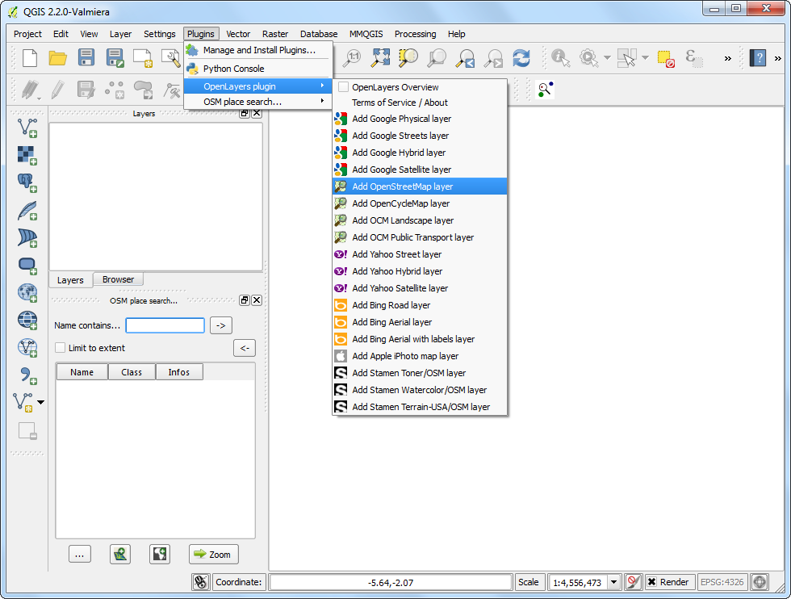
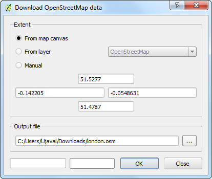
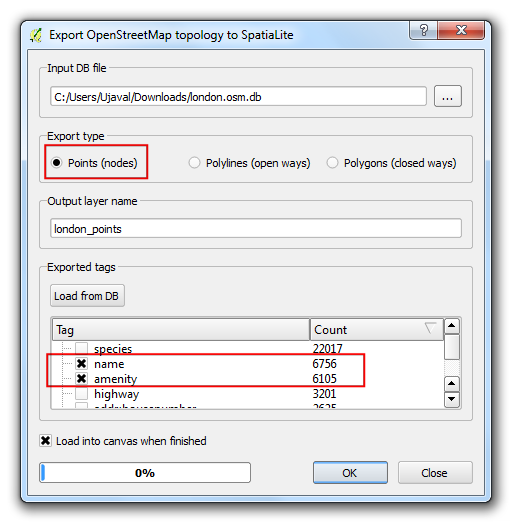
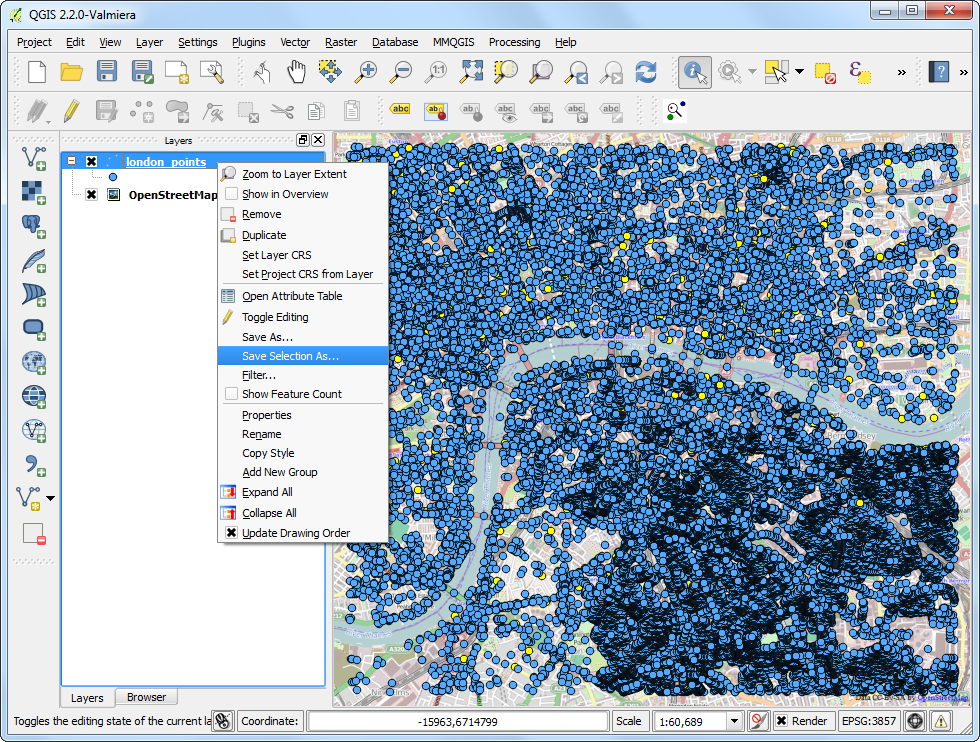
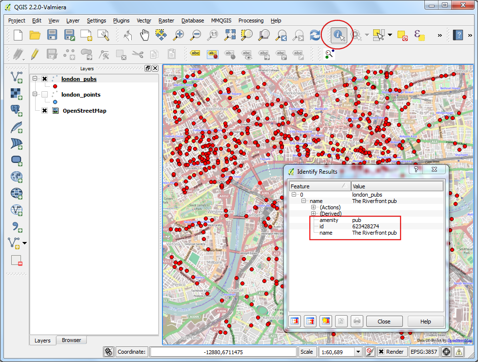

搜尋和下載開放街圖資料
取得高品質的資料是 GIS 作業時很重要的一環。開放街圖 (OpenStreetMap, OSM) 就是一個不錯、免費，而且給每個人自由使用的資料。OSM 的資料含有像是街道、建築範圍等等的地區性資訊，而且在 QGIS 內已經內建了功能讓你直接使用 OSM 的資料庫。本教學將示範如何在 QGIS 內尋找、下載並使用開放街圖的資料。
內容說明
在 OSM 資料庫中尋找然後選擇一部份倫敦的地圖，把所有酒吧的位置標出來然後存成 Shapefile。
操作流程
首先我們要安裝 OSM Place Search 和 OpenLayers plugin 這 2 個附加元件才能順利完成本操作。關於如何安裝附加元件，請看 使用附加元件。（譯註：前者有可能被歸類在實驗性的附加元件的類別下。）

OSM Place Search 會在 QGIS 中安裝一個叫做 OSM place search... 的面板。

OpenLayers plugin 會在 附加元件 或是 網路 的選單中新增一個選項。這個外掛讓你可以在 QGIS 中直接瀏覽網路上提供地圖的不同來源。現在我們就來試試看下載開放街圖的底圖，選擇 （譯註：實際的位置和名稱，可能會隨著你的 QGIS 版本的不同而有些微變化）。

接著 QGIS 中就可以看到世界地圖了。
註解
如果你沒看到任何資料的話，有可能是你沒有連上網，因為這些資料都是直接從網路上下載的。你可以使用 平移地圖 鈕把底圖稍微移動一下，讓 QGIS 立刻從線上更新圖資。

來找看看倫敦吧。在 OSM Place Search 面板中的 Name contains... 欄位輸入 london，然後就會出現一堆結果，滑鼠移過去時會顯示這些地方在世界地圖上的位置。選擇第一個結果，它就是那個在英國的倫敦市，然後按下 Zoom 的按鈕。

然後底圖就會移到倫敦市附近。使用 放大 鈕可以更進一步放大到你想看的範圍，在本教學中，我們就把它移到倫敦市中心附近吧，如圖所示。

選擇 ，以下載目前顯示在畫布上的地圖區域。

在 下載開放街道圖資料 對話框中，選擇 從地圖畫面取得座標 以獲得地圖的下載範圍，再選擇輸出位置。這裡我們把下載檔案命名為 london.osm。

下載下來的 .osm 檔是一種稱之為 OSM XML 的格式。首先我們要把它轉換成 QGIS 比較容易消化的另一種格式。選擇 ：
註解
從現在開始，OSM Place Search 搜尋面板已經不需要了，可以直接按叉叉關掉。如果之後你要重新使用這個面板，可以在 (Windows) 或是 (Linux) 中啟用它。

在 輸入XML文件 的地方填上剛才下載的 london.osm，然後在 輸出SpatialLite DB文件 那邊把檔案命名為 london.osm.db，在按下確定之前，確認 :guilabel:`導入之後建立連接(SpatialLite)`有被勾選。

最後一步是把剛才的檔案匯到 SpatialLite 圖層內，就可以在 QGIS 內進行分析。請開啟 。

london.osm.db 檔案內含有所有 OSM 的資料結構，像是點、線、多邊形等等，不過一個 GIS 圖層通常只能有一種資料結構，所以我們必須要決定要讀取哪一種。我們的任務是要找出酒吧的位置，所以在 導出類型 中，選擇 點(節點) 就可以了。假設今天你要取得的是道路的資料，那麼這邊就要選「線集(總是開口)」。接下來在 輸出圖層名稱 那邊填上 london_points。這些點的 GIS 資料有位置和屬性資訊 2 個部分，由於我們要找的只有酒吧這種設施，所以這兩個資訊都要載入。因此在底下的 導出標籤 欄位中，先按一下 從資料庫載入，然後你就可以看到所有存在 london.osm.db 裡面的屬性，最後勾選 name 和 :guilabel:`amenity 兩個標籤（譯註：amenity 指福利設施，包含酒吧這種類型的商家）。如果你想知道所有的屬性意思，請參閱 `OSM Tags <http://wiki.openstreetmap.org/wiki/Tags>`_。把 處理完成後載入 QGIS 地圖中 打勾，就可以按下 確定。

回到 QGIS 主畫面中就可以看到有個叫做 london_points 的新圖層出現了。這個圖層含有這個視窗下所有的 OSM 資料庫中的點資訊，所以我們還必須要挑出標明為酒吧的點。右鍵按下 london_points 圖層然後 開啟屬性表格。

你可以發現有些點的 amenity 屬性欄位中是寫著 pub，所以我們要按下 :guilabel:`使用表示式選取圖徵`的按鈕...

輸入表達式 “amenity” = ‘pub’，然後按下 確定。

在 QGIS 畫布上，搜尋的結果已經變成黃色了。再使用右鍵按下 london_points 圖層然後選擇 存檔選取區域為... （譯註：新的 QGIS 版本中，本選項已經與 存檔為... 合併）。

在 儲存向量圖層為... 的視窗中，把新檔案命名為 london_pubs.shp，其他選項使用預設設定（譯註：如果有的話，要勾選 儲存僅選取的圖徵），確認一下 加入儲存檔案至地圖中 應該要是開啟的，最後按下 確定。

現在 QGIS 畫布上又多了一個 london_pubs 圖層，而 london_points 圖層已經用不著，可以關掉了。

倫敦酒吧的 Shapefile 到這裡總算製作完成。選擇 識別圖徵 工具然後點選任一個點就可以查看其屬性資訊。
